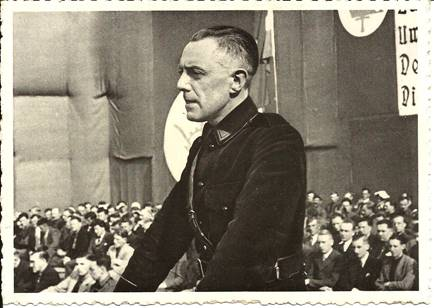

Het nieuwe Jaarboek Joris van Severen kwam ondertussen
van de pers (zie verderop voor wat de inhoud betreft). Wie tot
op heden naliet zn ledenbijdrage te vereffenen vindt bij dit
nummer andermaal een betaalformulier. Nagaan of u wel dan niet
betaald hebt leest u af op het adresetiket van dit nummer.
Indien u boven uw naam een *-symbool vindt, dan is alles in orde. Ontbreekt
dit *-symbool, dan wijst dit er
op dat we uw bijdrage nog niet mochten boeken.
De minimumbijdrage bleef behouden op 29 . In ruil
daarvoor verzekeren we u de stipte toezending van het nieuwe Jaarboek Jaarboek Joris van
Severen het 24e al van zodra we de achterstallige
bijdrage mogen boeken. Vereffening graag via onze rekening IBAN:
BE71 0001 7058 1469 BIC: BPOTBEB1 t.n.v. Studiecentrum Joris
van Severen, Paddevijverstraat 2, 8900 Ieper.
Raad van
Bestuur Studiecentrum Joris van Severen
Naar
aanleiding van de jongste Algemene Vergadering trad Luc Pauwels
aan als voorzitter. Wido Bourel en Hugo Morael traden toe tot de
Raad van Bestuur. Vik Eggermont werd tot erevoorzitter benoemd.
Jaarboek Joris van
Severen 24 (2020)
Met deze
aflevering zijn we aan het 24e Jaarboek Joris van Seveen
toe. De openingsbijdrage is van de hand van ondergetekende en
handelt over Enkele
krachtlijnen in het denken van Joris van Severen. Daarin komt het
jeugdbewegingsfenomeen aan bod met zijn
conservatief-revolutionaire fundamenten als vrijheid, orde en
aristocratische ingesteldheid.
Daarop
sluit Henk Tijssen aan met een vergelijking tussen Het Noord-Nederlandse Nationaal
Verbond en het Zuid-Nederlandse Verdinaso. Met
de auteur dienen we te besluiten dat er onmiskenbaar parallellen
te bespeuren vallen tussen de beide bewegingen.
InHans de Goeij, studentenleider,
katholiek revolutionair en Dinaso, gaat
Ruud Bruijns de rol en de verdiensten na, binnen het Nederlandse
studentenleven, het Nederlandse katholicisme en het Verdinaso
van deze merkwaardige persoonlijkheid, die de Verdinaso-idealen
levenslang hoog in het vaandel voerde.
Eerder van documentair
gehalte is het stukje uit de Britse krant, opgevist door Ruud
Bruijns over Joris van
Severen in de ogen van The Catholic Herald.
Een tijdseigen beoordeling die afbreuk doet aan de onzin van wat
heden ten dage veelal over het Verdinaso en zijn leider
gedebiteerd wordt.
Ook over de verhoudingen
en de samenwerking tussen zo verscheiden persoonlijkheden als Joris van Severen en Pierre Nothomb
is nog niet alles gezegd, zoals blijkt uit deze bijdrage van
Ruud Bruijns. Hij zoekt een antwoord op de vraag of Van Severen onder invloed
stond van belgicist Nothomb, of dat Van Severen juist invloed
uitoefende op Nothomb.
Dat de verhoudingen
tussen Ward Hermans en Joris van Severen bij momenten soms
turbulente vormen aannamen blijkt ten volle uit hun
correspondentie. Ook uit De
briefwisseling tussen Joris van Severen en Ward Hermans,
als bijeengesprokkeld door Gui van Gorp en Maurits Cailliau,
blijkt dit overduidelijk. Daarin o.m. boeiende informatie
omtrent Ward Hermans kijk op de in 1928 door Robrecht de Smet
opgerichte Jong Vlaamse Gemeenschap, die daartoe inspiratie
geput had bij het voorbeeld van de Jungdeutsche Orden van Artur
Mahraun in Duitsland. Dat Hermans uit het Verdinaso ontslagen
werd vooraleer zelf ontslag te kunnen nemen zal dan ook wel
niemand verwonderen.
Op zoek naar de wortels van de Orde Joris van
Severen brengt veelal
onbekende gegevens aan als destijds te berde gebracht in een
uiteenzetting van Jef Werkers. Deze bijdrage geeft bovendien een
inkijk op de door Louis Gueuning ondernomen pogingen om de
ideële erfenis van Joris van Severen ongeschonden doorheen de
moeilijke oorlogsjaren te loodsen.
Tenslotte is er nog het
Verhaal gedaan door Jules de
Cock nopens zijn aanhouding, de moordpartij van Abbeville,
enz. ons aangereikt door Jan Verstraete, gewezen
stafhouder van de Antwerpse balie en geannoteerd door onze
jaarboekredactie. Een verhaal dat in de tijd verder reikt dan
alle tot nog toe gekende getuigenissen van de lotgevallen die de
weggevoerden van mei 1940 te verduren kregen.
Afsluiten
doen we als steeds met een gedicht van Fernand Florizoone, dat Vlaanderen - In memoriam Joris van
Severen tot titel kreeg.
Ook voor deze editie van
ons jaarboek konden we andermaal rekenen op de gewaardeerde
medewerking van Frederic van Waeijenberge als onmisbare
tekstcorrector.
Ten gevolge
van de aanhoudende corona-maatregelen die elke niet-essentiële
verplaatsing onmogelijk maakten en mede door de aanhoudende
grenssluiting, dienden alle herdenkingsmomenten, zowel
te Brugge
als te Abbeville, afgelast te worden.
Op
initiatief van de Stichting Joris van Severen werd het
dubbelgraf van
Joris van
Severen en Jan Ryckoort te Abbeville op 20 mei ook dit jaar met
bloemen getooid, dank zij de medewerking van een plaatselijke
bloemmist..
Op 20 mei
werd Joris van Severen vermoord
Luc Pauwels
Op 10
mei 1940 vielen Duitse troepen gelijktijdig België, Nederland en
Luxemburg binnen: de Tweede Wereldoorlog voor onze gewesten.
Joris van Severen (°1894), gewezen Vlaams-nationaal
volksvertegenwoordiger (1921-1929) en oprichter van het Verbond
van Dietse Nationaalsolidaristen (1931), reageert met:
Ah, de schurken!.
Dezelfde
dag wordt hij door de Belgische Staatsveiligheid aangehouden,
zonder in beschuldiging te worden gesteld. Ze zijn met honderden
in dat geval: Vlaams-nationalisten, joden, communisten,
rexisten, waaronder Léon Degrelle Tegen alle rechtsregels in
worden ze gedeporteerd naar verschillende plekken in Frankrijk
en aan de plaatselijke overheid uitgeleverd.
Zonder vorm van proces
Joris
van Severen en zijn vriend Jan Ryckoort, tevens zijn
rechterhand, komen met een groep van enkele tientallen in
Abbeville aan de Somme terecht. Ze worden als beesten behandeld
en opgesloten in een kelder onder een muziekkiosk. Op 20 mei
worden 21 van hen zonder vorm van proces door Franse soldaten
vermoord. Dat het om dronken soldaten zou gegaan zijn, dat
magere excuus blijkt een verzinsel.
Eén
van de gevangenen die het overleefde, de Nederlandse kunstenares
Gaby Warris (1922-2013) schreef er in 1994 een sober,
aangrijpend boek over, Het bloedbad van Abbeville, 20 mei
1940. Ze was net 18 op het ogenblik van de feiten,
politiek helemaal niet betrokken. Tientallen jaren had ze nodig
om er over te kunnen schrijven.
Waarvoor stond het Verdinaso van Joris van
Severen?
We
beschrijven hier enkel de eindfase. De volledige evolutie van
Joris van Severen in kaart brengen, zou een volledig boek vragen
en dat is al geschreven. Na een korte periode van bewondering
voor de bolsjewistische revolutie van Lenin en Trotski
concentreerde de gewezen frontofficier uit de loopgraven aan de
IJzer zich op het eigen land. Een korte tijd bewonderde hij
Mussolini, maar dat is vlug over.
Hij
streeft drie fundamentele veranderingen voor: de eerste is een
politiek herstel van de Verenigde Nederlanden, zoals het laatst
bestond onder koning Willem I (1815-1830). Dat wil zeggen,
inclusief Luxemburg en de Waalse provincies (de Romaanse
gouwen), die moesten bevrijd worden van hun fascinatie voor de
Franse Revolutie. Men heeft dit een Boergondische visie
genoemd, geïnspireerd door de Zeventien Provincies. Het was
zeker een voorafbeelding van Benelux, maar dan met een volledige
staatkundige integratie.
Ten
tweede wil Joris van Severen de maatschappij hervormen op basis
van het solidarisme. Dat is een van oorsprong katholieke
staatsopvatting die werd geëxpliciteerd in de pauselijke
encyclieken Rerum Novarum (1891) en Quadragesimo
Anno (1931), maar waarvan ook protestantse en
niet-religieuze varianten bestaan. Van Severen zelf heeft veel
weg van een gelaïciseerde katholieke traditionalist, met zowel
christendemocratische als conservatieve trekjes.
Afwijzing van zowel het kapitalisme als het
communisme
Zijn
solidarisme houdt een expliciete afwijzing in van zowel het
kapitalisme als het communisme. Want, schrijft Van Severen,
zoals het Verdinaso met alle kracht onmogelijk wil en zal maken:
de heerschappij van het zogenaamde revolutionaire
proletariaat, zo wil en zal het Verdinaso met alle kracht
bekampen en vernietigen: de heerschappij van de bourgeois en van
zijn brandkast-ik-zucht. Tussen de bourgeois-maatschappij en het
communisme, kiest het Verdinaso niet. Het kiest niet tussen de
heerschappij van het geld van de ene kant en de gelijkheid in de
ellende van de andere kant (22.8.1936).
De
democratie schoot zich tijdens het interbellum zelf
herhaaldelijk in de voet. Tussen 21 november 1918 en 28 mei 1940
telde België maar liefst zeventien regeringen, waarvan sommige
het maar zeer kort uithielden. Het record werd gebroken door de
regering Pierlot I, die in 1939 precies zes (!) dagen aan het
roer stond. Koning Leopold III riep de politieke partijen
herhaaldelijk tot de orde, wat hem na de Tweede Wereldoorlog
zwaar werd aangerekend. In deze context kreeg de door het
Verdinaso voorgestane orde een heel andere perceptie.
Aristocratisch
De
derde pijler van de ideologie van Joris van Severen is een ethische
en daardoor - in ons huidig tijdsgewricht - de minst begrepen
component. Hij streefde naar een aristocratische levenshouding,
elitair, maar niet arrogant of egocentrisch, en dus vooral: ten
dienste van de gemeenschap. De kern ervan was een Plus est
en vous, de levenslange inspanning naar een ethisch
hogerop, met duidelijk Spartaanse trekjes. Daarin was
uitdrukkelijk plaats voorzien voor de arbeiders, de
aristocratie van de gewetensvolle arbeid (30.4.1938). Hij
heeft zijn aanhangers in het Verdinaso aangegrepen in heel de
sfeer van hun leven, privé en politiek, stelt Lode Wils. Zij
wilden zijn zoals Van Severen was of zoals Van Severen wilde dat
zij zouden worden. Zij werden aangegrepen door de innerlijke
wilskracht van deze man die, in dagelijkse strijd met eigen
twijfel en verscheurdheid, de indruk gaf van absolute waarheid
en zekerheid, telkens als hij zijn opvattingen uiteenzette of
zijn volgelingen toesprak.
Na zijn dood
Het
Verdinaso van Joris van Severen, was te zeer zijn persoonlijke
schepping om hem echt te kunnen overleven. Voor de moeilijke
keuze gesteld welke politieke weg het zou volgen onder de Duitse
bezetting viel het na enkele stuiptrekkingen uiteen in
verschillende fracties. Die kan men oppervlakkig etiketteren als
collaborerend of niet-collaborerend, maar het is beter ze
zorgvuldiger te omschrijven. We beperken ons hier tot de meest
bekende kaderleden van het Verdinaso.
De
omstandigheden van zijn dood deden de oude anti-Belgische
gevoelens weer hoog oplaaien. In de radicale collaboratie
(Algemene SS-Vlaanderen) vinden we Jef François terug, Pol le
Roy, Jef de Langhe e.a. Bij het VNV: Albert Deckmyn, Albert
Derbecourt, Leo Poppe e.a. Naar het Oostfront vertrokken o.m.
Kamiel de Wilde, Leo Verbeke en de uit het Verdinaso uitgesloten
Reimond Tollenaere. Paul Persyn, Willem Melis, Lode Claes, Pol
van Herzele e.a. namen belangrijke posten in het open-bare
bestuur en de Belgische administratie van de
secretarissen-generaal onder de bezetting in. Andere
oud-Dinasos wilden van geen collaboratie met de bezetter weten
en werden actief in het verzet, zo o.m. Jef van Bilsen, Frantz
van Dorpe, Pol van Herzeele en Albert Brienen. De Waalse
Dinaso-verantwoordelijke Louis Gueuning (1898-1971) handhaaft
een strikte politieke neutraliteit en specialiseert zich, samen
met André Belmans en anderen, in het hoeden van de nagedachtenis
van Joris van Severen door de uitgave van vele clandestiene
geschriften en het organiseren van vormingscursussen. Een aantal
medestichters van het Verdinaso trekt zich, na met lede ogen de
complete desintegratie van hun beweging te hebben aanzien,
volledig in het privéleven terug. Zo Emiel Thiers en Juul
Declercq.
Oud-Dinasos in de naoorlogse politiek
Een
circulaire van minister van Justitie Maurice Vervaet wees er bij
de bevrijding op dat het lidmaatschap van het Verdinaso geen
strafbaar feit was. Sommige oud-Dinasos zullen na de Tweede
Wereldoorlog weer politiek actief worden. Kleine
herstichtingspogingen lopen allemaal en snel op een sisser uit.
Slechts in twee politieke families komen oud-Dinasos duidelijk
weer aan trek: in de CVP en in het Vlaams-nationalisme. Wim
Melis wordt in 1947 de eerste hoofdredacteur van De
Standaard, Jef van Bilsen (1913-1996) wordt o.m.
secretaris van het Centrum Harmel, door het parlement
opgericht om de communautaire problemen in België te
onderzoeken. Frantz van Dorpe (1906-1990) brengt het tot
burgemeester van Sint-Niklaas-Waas. Raf Renard (1911-2002) wordt in 1964 door het
parlement benoemd tot de eerste voorzitter van de Vaste
Commissie voor Taaltoezicht. Ir. Fritz A. Donckerwolcke
(1912-1988) wordt in 1949 voorzitter van de Vlaamse
Concentratie, de eerste naoorlogse Vlaams-nationale
partij. Jef François (1901-1996) zal een tijd vrijgestelde
zijn van de Volksunie in het Antwerpse. Lode Claes
(1913-1997) wordt in 1958 secretaris-generaal van de Economische
Raad van Vlaanderen, daarna senator van de Volksunie
en in 1977 stichter van de Vlaamse Volkspartij.
Joris van
Severen blijft in de herinnering als een charismatisch leider
(Lode Wils), een aristocraat in de ethische betekenis van het
woord, en een blijvende Heel-Nederlandse inspirator. Een
wegbereider.
De Belgische staat heeft zich nooit
verontschuldigd voor deze schanddaad
De moord op
Joris van Severen roept nog altijd vele vragen op

Dat bleek uit de
vele reactie die de auteur kreeg op zijn artikel van 20 mei,
op Doorbaak en via andere weg. Luc Pauwels trok met de meest
voorkomende vragen naar Vik Eggermont, voorzitter van het Studiecentrum Joris
van Severen.
Hoe kwam een notariszoon uit een
tweetalig, burgerlijk milieu in het Vlaams-nationalisme
terecht?
Het
gezin Van Severen was inderdaad tweetalig en het tweede deel van
uw vraag: burgerlijk milieu is daarvan de verklaring. Zoals er
duizenden gezinnen waren in Vlaanderen in de 19e eeuw stond ook
het gezin van dorpsnotaris Edmond van Severen, de vader van
Joris, onder invloed van de dominante Franse taal en cultuur.
Het Frans was er de gebruikelijke huistaal, maar men verstond en
sprak er ook Nederlands, waarin het West-Vlaamse taaleigen
duidelijk hoorbaar was. Er bestond zeker geen animositeit
tegenover het Nederlands, zeggen wij hier nog liever: het
Vlaams. Ook onze Vlaamse Guido Gezelle correspondeerde in het
Frans.
Je kan
het gezin Van Severen dus geen franskiljons gezin noemen.
Franskiljons waren mensen die de Nederlandse taal minachtten en
voor het Frans kozen om te tonen dat ze van een betere soort
waren dan de gewone Vlaamse volksmens. Niets daarvan in het
ouderlijke gezin Van Severen. Herinneren wij er overigens aan
dat Hugo Verriest er een vriend des huizes was. De vader van
Joris van Severen, Edmond, stond aan het hoofd van een
dorpspartij die zich richtte tot de gewone dorpeling. Bij de
gemeenteverkiezingen stond hij dan ook lijnrecht tegenover de
partij van de kasteelheer, baron Kervyn de Lettenhove, die wel
van franskiljonisme kon verdacht worden.
Het
was vader Van Severen die door de Wakkenaars tot burgemeester
werd verkozen. Joris groeide dus wel op in een Franssprekend
gezin, maar was zeker geen franskiljon. Logisch dat hij op het
Gentse Sint-Barbaracollege al vlug onder invloed kwam van de
Vlaamse studentenbeweging, de Blauwvoeterie van Albrecht
Rodenbach en de zijnen. Hij werd er Vlaamsgezind en omarmede
later het Vlaams-nationale gedachtegoed.
Toch stapte hij weer uit het
Vlaams-nationalisme? Was dat alleen omdat hij in 1929 niet
herverkozen werd als volksvertegenwoordiger?
Deze
vraag is veel korter te beantwoorden dan de eerste. Ik zou
simpel zeggen dat het een progressie was in politieke wijsheid.
Van Severen zag geleidelijk de gebreken en tekortkomingen in van
het Vlaams-nationalisme, voornamelijk haar gebrek aan politieke
coherentie. Hij zag in dat een onafhankelijk Vlaanderen, waarvan
hij aanvankelijk had gedroomd niet voldeed aan de eisen van zijn
tijd, n.l. het Europa dat na de Eerste Wereldoorlog tot stand
kwam. Daarom evolueerde hij eerst naar Groot-Nederland
(Vlaanderen plus Nederland) om dan, vooral toen een nieuwe
oorlogsdreiging acuter werd, verder te evolueren naar
Heel-Nederland, wat later de Benelux zou worden. Zeg maar dat
hij geleidelijk aan inzicht kreeg in de historische gebondenheid
van alle Nederlanden. De Bourgondische Nederlanden zoals men
wel eens zegt, of de Zeventien Provincies.
Van
Severen heeft het Vlaams-nationalisme niet verraden, hij heeft
het alleen voltooid, het op een hoger (geopolitiek) niveau
getild. Hij zetelde sinds 1921 in de kamer voor de Frontpartij.
Zijn beweging, het Verbond van Dietse Nationaalsolidaristen
(Verdinaso), heeft hij zeker niet opgericht omdat hij in 1929
niet meer verkozen werd. Hoogstens heeft deze gebeurtenis zijn
evolutie versneld. Hoe dan ook zou hij, verkozen of niet, vroeg
of laat de weg opgegaan zijn die de zijne was.
Heeft Van Severen het Vlaams-nationalisme
verraden, zoals toen beweerd werd?
Van
Severen heeft het Vlaams-nationalisme niet verraden, hij heeft
het alleen voltooid, het op een hoger (geopolitiek) niveau
getild. Hij zetelde sinds 1921 in de kamer voor de Frontpartij;
zijn beweging, het Verbond van Dietsche Nationaalsolidaristen
(Verdinaso), heeft hij zeker niet opgericht omdat hij in 1929
niet meer herkozen werd. Hoogstens heeft deze gebeurtenis zijn
evolutie versneld. Hoe dan ook zou hij, verkozen of niet, vroeg
of laat de weg opgegaan zijn die de zijne was.
Een van de bekendste
uitspraken van Joris van Severen, in volle Kamer nog wel,
was "La Belgique, qu'elle crève!" Bedoelde hij daarmee
het land of het regime?
De
uitroep La Belgique, quelle crève is inderdaad misschien wel
de meest bekende en geciteerde uitspraak die aan hem
toegeschreven werd en wordt. Zij past dan inderdaad ook volledig
in zijn aanvankelijk radicaal anti-belgicisme. En ik denk dat
hij in die periode misschien wel degelijk het land bedoelde. Het
eigenaardige is evenwel dat van die uitspraak nergens, maar dan
ook nergens een spoor kan terug gevonden worden. Niet in de
parlementaire analen, niet in de Nederlandstalige en Franstalige
pers, nergens. En het valt toch moeilijk te geloven dat
dergelijke vloek in die tijd nergens ter sprake zou gekomen
zijn.
Mijn
goede vriend en mentor, wijlen Jef Werkers heeft daar langdurig
en grondig onderzoek naar gedaan. Zonder resultaat. Het verslag
van dit onderzoek werd gepubliceerd in het Jaarboek nr. 11
(2007, pag. 191 e.v.) van het Studiecentrum Joris van Severen.
Indien iemand kan aantonen dat zijn onderzoek hiaten vertoont en
dat deze uitspraak wèl ergens vermeld wordt, dan zouden wij hem
daarvoor erg dankbaar zijn.
Waarvoor stond het door hem opgericht Verdinaso
aanvankelijk?
Het is
overduidelijk dat zijn beweging bij de aanvang duidelijk een
revolutionaire inslag had. Van Severen streefde naar een
organische opbouw van de samenleving met inachtneming van het
subsidiariteitsbeginsel. Dit moest hem noodgedwongen in botsing
brengen met een z.g. democratie die stoelde op de almacht van de
politieke partijen en hun verdeel- en-heerspolitiek. Gaandeweg
zou Van Severen inzien dat een politieke beweging tot
steriliteit en zelfs ondergang gedoemd was als ze niet
tezelfdertijd een vormingsbeweging was.
Vorming,
zo citeerde hij Salazar ooit, het is sinds het begin van mijn
politieke activiteit mijn hoofdbekommernis geweest. Uiteraard
ontbreekt mij hier de ruimte om daar dieper op in te gaan. Tot
waar hem die opvatting zou geleid hebben, is een vraag die wel
voor altijd onbeantwoord zal blijven. De gebeurtenissen hebben
belet dat hij zijn taak kon voltooien. Vergeten wij niet dat hij
niet eens zijn 46e levensjaar mocht voltooien, doorgaans de
leeftijd dat een normaal mens zo ongeveer begint te beseffen wat
het leven inhoudt!
Uw
vraag werd eigenlijk al beantwoord in uw kort, maar degelijk
artikel dat op 20 mei in Doorbraak werd gepubliceerd. Te
herlezen!
Was het Verdinaso fascistisch?
Hierop
kan ik kort en bondig neen antwoorden. We kunnen niet iedereen
die ooit met belangstelling, heeft opgekeken naar de
verwezenlijkingen van Mussolini in Italië (zelfs als wij de
mythe geloven dat die er in slaagde in dat land de treinen stipt
te doen rijden!) een fascist noemen? Wel dan liepen er in
Europa, en zelfs daarbuiten, véél fascisten rond, zelfs in de
meest democratische partijen. Uiteraard heeft Van Severen ooit
een korte tijd belangstelling gehad en waarschijnlijk zelfs een
zekere sympathie voor het Italiaanse fascisme. Zoals hij ooit
als soldaat aan het IJzerfront in 1917 nieuwsgierig, met veel
belangstelling en zelfs bewondering heeft gekeken naar wat zich
in Ruslandvoltrok.
Gaan wij hem daarom een communist noemen?
Aansluitend
bij die vraag: hoe stond Van Severen tegenover nazi-Duitsland?
Dat Van Severen in de Reichskanzlei in Berlijn niet bijster goed
aangeschreven stond, is algemeen bekend. Wie daar meer wil over
weten, raden wij het artikel aan Terechte Duitse argwaan,
blijkend uit hun documenten, ten overstaan van het Verdinaso
van de hand van Maurits Cailliau, te lezen in het Jaarboek 23
(2019) van het al genoemde Centrum (pag. 85 e.v.). Maar laten
wij Joris van Severen zelf aan het woord: Wij zijn geen
navolgers van Mussolini, noch van Hitler (in het bewegingsblad
Hier Dinaso! van 31 maart 1934), enkele maanden later in
hoofdletters herhaald: De Dinaso-gedachte is niet de gedachte
van het Duitse nationaalsocialisme, noch de gedachte van het
Italiaanse fascisme (Hier Dinaso! 7 juli 1934). Kan het
duidelijker?
Heeft de Belgische staat ooit eerherstel of
compensatie geboden voor de wederrechtelijke aanhouding
van JvS, zijn wegvoering en moord?
Neen!
Voor zover ik weet heeft de Belgische staat nooit officieel ook
maar iets gedaan of gezegd om zich te verantwoorden, te
verontschuldigen voor deze wederrechterlijke aanhouding,
nochtans een ware schanddaad. Welke staat, die naam waardig,
levert zijn onderdanen zonder de minste vorm van proces zo maar
over in de handen van een vreemde mogendheid?
Wel
weet ik dat er ooit in het Belgisch parlement over gesproken is,
maar in welke omstandigheden en hoe ver is mij niet meer bekend.
Wat wel opvalt is dat het een Waal was, de Luxemburgse senator
baron Pierre Nothomb (met wie Van Severen overigens uitstekende
connecties had), die voor hem in de bres gesprongen is en bij de
Eerste-Minister, Pierlot, gepleit heeft voor zijn onmiddellijke
vrijlating. Jammer genoeg tever-geefs. PS: Einde mei werden deze beide bijdragen al 4395 maal
gelezen!
80 jaar na 20 mei
1940 - Niet naar Abbeville door Corona
Luc Seynaeve, Voorzitter Stichting
Joris van Severen
Verschillende
initiatieven rondom Joris van Severen en Jan Ryckoort zijn niet
kunnen doorgaan door de beschermende maatregelen tegen het
corona-virus. De Stichting Joris van Severen heeft dan ook dit
jaar haar drieledige opdracht niet kunnen uitvoeren.
·Het organiseren van een
kerkelijke dienst ter herdenking van Joris van Severen en Jan
Ryckoort én hun lotgenoten.
·De herdenking in de Wollestraat
van de 4 Brugse oorlogsslachtoffers. Joris van Severen, Jan
Ryckoort, Maria Ceuterick en Louis Caestecker. Twee
bestuursleden van de Stichting zijn lid van het Abbeville
Comité.
·Het bezoek en de herdenking aan
het graf te Abbeville. De Stichting is hiervan de
initiatiefnemer sedert de ontbinding van de vzw Abbeville in
2007. De ononderbroken aanwezigheid jaarlijks aan het graf te
Abbeville werd dus onderbroken door heirkracht. De bloementuil
op het graf op 20 mei 2020 getuigt van onze stille aanwezigheid
Hierbij
een tweetal opmerkelijke items:
·Eerstens is het frappant vast
te stellen dat een staatsman na zo lange tijd nog steeds
herdacht wordt. Het is weinig staatsmannen gegund. Dit wijst op
zijn bijzondere politieke betekenis. Ideeën als solidarisme én
de politieke realisatie van het geheel der Nederlanden zijn
nog steeds actueel én zullen qua inhoudelijke betekenis het
politieke spectrum in de toekomst verrijken.
·Ten
tweede kan de vraag gesteld worden: Hoelang zal dit nog doorgang
kunnen vinden? Ten eeuwigen dage is uiteraard symbolisch. Het
zou mooi zijn als we de traditie konden doortrekken tot 20 mei
2040 100 jaar terug. Slechts enkelen van ons zullen dit nog
meemaken. Er is dus werk aan de winkel! Gouverner, cest
prévoir. Dit is wat de Stichting moet doen in deze.
De
statuten (opgesteld maart 1992) zeggen immers: De persoon en
het werk van Joris van Severen is ere houden én ze aan de
anderen leren kennen én inkaderen. Daartoe organiseert de
vereniging naast godsdienstige ook andere herdenkingen,
spreekbeurten, publicaties, studie of enige andere activiteit.
Het
Studiecentrum heeft reeds uitzonderlijk veel professioneel werk
verricht, via de uitgave van de jaarboeken. Beide verenigingen
moeten in de toekomst hun verantwoordelijkheid continueren.
Andere aanverwante initiatieven als vzw Wakken herdenkt en het
daaraan verbonden museum, en het Brugse Abbeville ad-hoc Comité
moeten gestroomlijnd worden. De tand des tijds (minder
werkkrachten, minder leden, financiële werkpunten, verwarring
lidmaatschappen enz) zal het noodzakelijk maken beide vzws om
te vormen tot één vzw. Deze vzw zou als maatschappelijke
opdracht hebben de opdracht geformuleerd in de statuten van de
Stichting. De complementaire werking moet leiden tot een
symbiose met een frisse eigentijdse uitstraling.
Bovendien
is het noodzakelijk in de verdere toekomst 2030 2040 Joris van
Severen te kaderen binnen een bredere maatschappelijk verband.
De volgende generaties zullen Joris van Severen niet ten gronde
kennen maar enkele flarden van zijn ideeën doen overleven zou
bijzonder zijn.
Een
inkadering en inkapseling binnen een bredere passende politieke
maatschappelijke context is dus aan de orde. Een opening naar
Identiteit is een oplossing. Identiteit is een VlaamsNederlands
vormingscentrum met een uitgebreid informatiecentrum. ID
bevordert de maatschappelijke discussie rond onderwerpen als
duurzaamheid, culturele identiteit (Vlaams-Nederland-Europees),
subsidiariteit en authenticiteit in onze geglobaliseerde
samenleving. Er is een bibliotheek, er is uitgave van boeken,
vorming, vergaderruimte, zomeruniversiteit.
Dit
alles vraagt best extra overleg. Uw mening telt. Graag ideeën
hieromtrent mailen naar: deverte@hotmail.com
(t.a.v. Luc Seynaeve, voorzitter Stichting Joris van Severen).
Essentieel is dat bepaalde aspecten van het ideeëngoed van Van
Severen het verleden linkt aan de actualiteit en de toekomst op
politiek vlak. Op bestuursniveau van de Stichting en van het
Studiecentrum moet hieraan gewerkt worden. We hebben de plicht
de figuur als Joris van Severen te vrijwaren én zijn juiste
plaats te geven in de toekomstige maatschappelijke politieke
ontwikkeling.
De
volgende editie te Abbeville in mei 2021 ligt reeds vast!
Graag
besluit ik met de woorden van Joris van Severen die hij neer
schreef op 30 april 1938: Voor ons culmineert het leven in de
volmaking der menselijke persoonlijkheid.
In Memoriam
Op 24
september 2019 overleed te Oostende Roger Ponjaert. Hij
was sinds jaar en dag lid van het Studiecentrum Joris van
Severen.
Herman
Morael (2 juni 1926 23 mei 2020).
Herman was de jongste van een groot gezin. Zijn pad ging niet
over rozen. Nog geen 2 jaar oud verloor hij zijn moeder en als
17 jarige stierf zijn vader in het bombardement van Mortsel. Hij
keek op naar zijn oudere broers-DMOers. Zijn overweging om zich
te melden voor het Oostfront werd hem door zijn oudste broer
Lode, die zijn voogd was, uit het hoofd gepraat. Hij werd dan
een gedreven arbeidsdienstman (VAVV). Daar ontmoette hij in het
leiderskader vele ex-DMOers waaronder zijn broer officier
Karel. Op zijn terras in hartje Brugge, met uitzicht op een rei,
hangt nog steeds de spade aan de wand. Na de repressie-problemen
vond hij steun bij lotgenoten in de volkskunstgroep De Schalmei.
Hij bouwde in Antwerpen een optiekzaak uit en werd actief in de
protestantse gemeente.(HM) Afb.: het Hugenotenkruis dat
Herman lief was
Er moest iets
nieuws komen! Getuigenissen van Nederlandse fascisten
Op de recensiepaginas van Doorbraak - zie link
onderaan besteedde Karl Drabbe uitgebreid aandacht aan de
nieuwe studie van Willem Huberts over de fascistische
tendensen in Nederland tijdens de jaren van het interbellum.
We brengen hieronder zn slotbeschouwing omtrent de wijze
waarop het Verdinaso in deze studie aan bod komt.
Op de suggestie van de auteur om aan de in de
besproken uitgave aan bod komende nieuwe gegevens meer
uitgebreid aandacht te besteden zal ingegaan worden in het
Jaarboek Joris van Severen 25 van 2021.
Maurits Cailliau
Verdinaso
Zo
duikt heel wat nieuwe informatie op over het Verdinaso. In het
getuigenis van Labouchere komen heel wat passages aan bod over
de zoektocht naar Groot-Nederlandse samenwerking tussen De Bezem
van Sinclair de Rochemont en het Belgische Verdinaso. De
gesprekken met Joris van Severen en Wies Moens, zowel voor als
na de Nieuwe Marsrichting van het Verdinaso komen uitvoerig
aan bod. Ze werpen een verrassend nieuw licht op de plannen ter
zake. Ik keek het nog even na. In geen van de 23 jaarboeken van
het Studiecentrum Joris van Severen is over deze gesprekken en
potentiële samenwerking sprake. Daarmee heeft dat centrum een
nieuw onderzoeksterrein om aan te boren.
Die
gesprekken zijn uiteindelijk tot niets uitgelopen. Van Severen
liep niet hoog op met de verdeeldheid in Nederland noch met
initiatiefnemer Sinclair. Die laatste was nogal geporteerd door
Van Severen, en hernoemde zijn beweging in Verbond van
Nationaal-Solidaristen in Rijks-Nederland. Maar het gebrek aan succes, zorgde voor
de nodige scepsis bij Van Severen: er moet iets niet
deugen aan uwe methoden. De Leider heeft nooit zijn
definitieve jawoord gegeven en liet een Nederlandse tak
uitbouwen in het Noorden.
Labouchere
schrijft nogal schamper over dat Verdinaso Nederland. Het is
nooit meer geweest dan een organisme ter versterking van het
prestige van Van Severen in zijn eigen land. Niets meer dan
een groep sympathisanten wie het alleen al om redenen van
organisatorische aard niet mogelijk was een reële politiek actie
te voeren.
N.a.v.: Willem
Huberts, Er
moest iets nieuws komen! - Getuigenissen van
Nederlandse fascisten 1940-1950. UitgeverVantilt,
gen., ill., 530 p., ISBN9789460044519.
Nota van de redactie: dit gegeven zal aan bod komen in
het Jaarboek Joris van Severen 25 (2021)
Sind Sie verrückt geworden?
Französische
Soldaten verübten am 20. Mai 1940 in Abbeville ein
Massaker: Ehrung als Widerstandskämpfer
Hans-Jürgen
Wünschel
Jedes Jahr am 18. Juni
legt der französische Staatspräsident am Mont-Valerien, dem
Soldatenfriedhof in der Nähe von Paris, einen Kranz nieder um
der Opfer des Zweiten Weltkrieges zu gedenken. Diese Zeremonie
schließt auch das Gedenken an zwei französische Soldaten ein die
am 20. Mai 1940 in Abbeville ein grauenhaftes Massaker an 21
Europäern verübt haben. Es gibt nur wenige Schriften die darüber
berichten.
An de Wand der Passage
am Bourgoensche Cruyce in der belgischen Stadt Brügge ist eine
sehr schön gestaltete Erinnerungstafel mit den Namen der Opfer
zu sehen: Louis Caestecker (28), Joris van Severen (46), Jan
Ryckoort (51), Maria Ceuterick (61). Was war geschehen, dass
heute immer noch in belgisches Brügge am Jahrestag des Massakers
der vier belgischen Einwohner gedacht wird, die diesem Morden
zum Opfer gefallen sind?
Als die deutsche
Wehrmacht am 10. Mai 1940 ihrem Feldzug über Belgien gegen
Frankreich begann, würden im Auftrag der belgischen
Generalstaatsanwalt W. Ganshof van der Meersch Haftbefehle
vollstreckt. Verdächtige Personen wie Kommunisten, belgische
Nationalisten, Juden, vermutete deutsche und belgische Spione
und Rexisten, Anhänger der wallonisch-faschistischen Bewegung,
wurden verhaftet. Von ihnen kamen 79 Männer und Frauen ins
Stadtsgefängnis von Brügge, darunter 21 Belgier, 18 Juden
unbekannter Nationalität, 14 deutsche, sechs Holländer, drei
Luxemburger, neun Italiener, zwei Schweizer, ein Franzose, ein
Spanier, eine Däne, ein Kanadier Bobbie Robert, Bell, Trainer
der deutschen Eishockeynationalmannschaften, ein Österreicher,
ein Tscheche. Sie wurden am 15. Mai 1940 in drei Omnibussen nach
Abbeville transportiert, wo Sie am 19. Mai ankamen. Sie mussten
die Nacht von 19. auf 20. Mai Im Keller des Tanzkasinos an der
Porte du Bois verbringen.
Für
21 Geiseln kam jede Rettung zu Spät
Inzwischen hatten sich
deutsche Einheiten unter General Heinz Guderian, darunter die
57. Infanteriedivision unter Generalleutnant Oskar Blümm, der
Kanalküste genähert und begonnen Abbeville zu Beschießen. Der
Verteidiger von Abbeville, Capitaine Marcel Dingeon (1891-1941),
meist von seiner Aufgabe als Offizier überfordert, oft
betrunken, befürchtete, dass die deutschen Truppen die
Gefangenen befreien würden und entschied sich für eine schnelle
Lösung. Er erteilte dem Stabsfeldwebel der 5. Kompagnie
François Molet (1989-1942) den mündliche Befehl: Fussiller les
tous - Alle erschießen.
Mollets direkter
Vorgesetzter Leutnant Rene Caron (1896-1942) vergewisserte sich
und ging zu Dingeon der immer noch betrunken erneut rief:
Erschieß sie alle! In Gruppen von vier Personen wurden die
unglücklichen Zivillisten aus ihrem Kerker geholt.
Manche wurden schon auf
dem Weg zum Erschießungskommando misshandelt. Die damals
18.-jährige Gaby erinnerte sich Jahre später: Der französische
Soldat stach zweimal mi sein Bajonett von hinten zu, den hob er
sein Gewehr schlug meiner Großmutter mit aller Wucht der Schädel
ein. Zufälligerweise führ der französische Leutnant Jean
Leclabart vom 28. Regiment am Kasino vorbei und sah was vor sich
ging. Er kannte die Militärvorschriften, verlangte den
schriftlichen Befehl für die Hinrichtungen zu sehen. Da niemand
einen solchen Befehl vorzeigen könnte, beendete er das Massaker
mit dem Ausruf: Mais enfin, êtes vous devenue fous? Sind Sie
verrückt geworden?
Nach seinem Eingreifen
wurden die überlebenden Gefangenen vom französischen Militär
nach Rouen gebracht, das Ende Mai schließlich von den
Infanteriedivision erobert wurde und wo sie bis nach dem
Waffenstillstand zwischen Frankreich und dem Deutschen Reich am
22. Juni1940 blieben. Die Deutschen ließen die Leichen der
ermordeten 21 Häftlinge auf dem Städtischen Friedhof begraben.
Dem
Täter wurde nach 1945 eine Straße gewidmet
Capitaine Dingeon, der
die Hinrichtungen angeordnet hatte, war 1941 von der
französischen Vichy-Regierung verurteilt worden, entzog sich
aber der Hinrichtung durch Selbstmord am 21. Januar 1941. Die
deutsche Militärjustiz eröffnete ein Ermittlungsverfahren und
verurteilte die verantwortliche französische Soldaten Leutnant
Caron und Sergeant Molet zum Tode. Das Urteil wurde am 7. April
1942 auf dem Mont Valerien Hinrichtungsstätte der deutschen
Militärjustiz vollstreckt. Der deutsche Gefängnispfarrer in
Paris, Franz Stock, schreibt in seinen Tagebuch: Dienstag
7.4.1942, bereite Molet und Caron auf dem Tod vor. Haben beide
gebeichtet und kommuniziert. Sollen verantwortlich sein für
Erschießung von Internierten in Abbeville. Ils disent quils ont
obéi aux ordres. Sie sagen, sie haben auf höheren Befehl
gehandelt.
Die Stätte Mont Valerien
dient nach Ende des Zweiten Weltkrieges als Gedenkort für die
französischen Widerstandskämpfer. Auch für Verbrecher? Nach dem
Krieg erhielt eine Straße in Abbeville den Namen rue Lieutenant
Caron. Die Anfrage nach dem Grund für diese Ehrung wurde von der
Stadtverwaltung nicht beantwortet.
Jähre später beerdigte
der Volksbund Deutsche Kriegsgräberfürsorge die Leichen der
deutschen Opfer auf dem deutschen Soldatenfriedhof in Bourdon,
Somme. Die sterblichen Überreste von Joris van Severen und Jan
Ryckoort wurden in einen Grab in Abbeville beigesetzt. Maria
Ceuterick und Lucien Monami fanden ihre letzte Ruhe auf dem
belgischen Soldatenfriedhof von De Panne. Neun sterbliche
Überreste wurden in einen Massengrab in Abbeville beerdigt.
 Met deze
aflevering zijn we aan het 24e Jaarboek Joris van Seveen
toe. De openingsbijdrage is van de hand van ondergetekende en
handelt over Enkele
krachtlijnen in het denken van Joris van Severen. Daarin komt het
jeugdbewegingsfenomeen aan bod met zijn
conservatief-revolutionaire fundamenten als vrijheid, orde en
aristocratische ingesteldheid.
Met deze
aflevering zijn we aan het 24e Jaarboek Joris van Seveen
toe. De openingsbijdrage is van de hand van ondergetekende en
handelt over Enkele
krachtlijnen in het denken van Joris van Severen. Daarin komt het
jeugdbewegingsfenomeen aan bod met zijn
conservatief-revolutionaire fundamenten als vrijheid, orde en
aristocratische ingesteldheid.